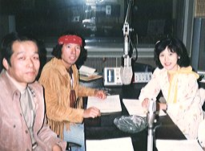
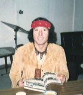

1978年の6m入感状況
[DX Report Jan-Dec.1978]
TIME:JST(UTC+0900)
Report from JA1RJU (PM95sq)
◎1978年はサイクル21の上昇期の入感リポートです。

01.Jan.1978
◎6mでEsが発生。JA7-JA6、JA1-JA4、6と09:00JST頃に短時間オープン。
28MHzでQSOしたGuamのKG6JIHによると、S.Fは上昇中でSpain(EA)の局がAMでQRVしているとの情報あり。
KG6JDXは本国に休暇で出かけている。
02.Jan.1978
◎New Year Party は6mで参加。100余局とQSO。
28MHzでのVK3OT・Steveからの情報では、現在彼はVK9NI、YJ8KM両局のQSL-Mgrを引き受けている。
YJ8KMは1977年12月までにZLなど4局とQSOしている。VK9NIは52.050MHz付近にQRVしていて、
既にVK(VK3OT、VK4's)、ZL(ZL1QY、ZL2JA)、YJ8KMとQSOしている。
FK8AU、VK9ZM(Willis I)が6mと2mにQRVを予定している。
◎VK0WW(Maquarii Is)は1973年11月からQRVしていない。南極とはVKからもまだ誰もQSOしていない。
VK0GWがOSCARで出た事はあるが、現在はQRTしている。
VK3OTによると、VKのSMIRKのMemberは5局。VK6ZDY、VK8ZCJ、VK4RO、VK4MS、VK4GS、VK3OTらが現在申請中。
彼が6mでQSOしたDXはP29(1975)、5W1(1973)、HL9(1976)、JA(1976)、ZL3/C(1972)
◎1977年10月11日のVK8ZCJとWB5LBJ/DU6のQSOは1970年以来のVK-DUのQSO
◎VKのBeacon局(1977年12月現在)
VK0MA 53.100MHz(Morson)
VK2WI 52.450MHz
VK5VF 53.000MHz
VK6RTU 52.350MHz
VK6RTW 52.950MHz
VK6RTV 52.300MHz
VK7RNT 52.400MHz
VK8VF 52.200MHz
04.Jan.1978
◎JA1UT・林氏からVS6/CR9のDX-Peditionを計画中と連絡あり。
09.Jan.1978
◎S.F上昇中(150程度)。KG6JIH・Jerryからの情報によると、SaipanからKG6RJ、
アラスカのShemya IsからKL7FBI、GuamからKG6APPが6mにQRV出来ると。
02.Feb.1978
◎20:00-21:40JSTにVK8VF(52.200MHz)Beacon入感。
03.Feb.1978
◎50.740/50.750のZL-Audioが13:15-13:50JSTに入感。52.050MHzでCQを出せどDXからの入感はなし。
07.Feb.1978
◎50.740/50.750のZL-Audioが13:00-14:00JSTに入感。
09.Feb.1978
◎FO8/C(Clipperton I)の日程(Mar.20-27)決定。周波数160m-6m。
予定されているOP.F5LI.F6AQO.F6BFH.F9JS.HB9AEE.HB9AHL。
他にF6BBJ.F9IE.F6ARC.HB9AQMも候補に上がっている。
11.Feb.1978
◎13:50JST頃からVS6、VK5.6、KG6がオープン。13:50JST、HL9WIをコールしているVS6BEが入感。
この日の1ST-QSOはJA7QVI。その後JA7、JA1がQSO(14：00-14:20JST)。
VS6BEのQSLは6mのものに付いてはJA1UTからも発行される。
この日はVK5KK、VK6ZLNも入感(16:29JST）。
GuamのKG6DXは12:00-14:00JSTにJA8＝27局、JA7＝1局とQSO
12.Feb.1978
◎KG6DX＝50.100MHz、VK8DA/P＝52.525MHzでBeaconを出している。
13.Feb.1978
◎日本短波放送「子門と照子の QSOジョッキー」録音日(19:00-21:00JST)
パーソナリティー：子門真人(JI1KLK) & 大橋照子さん。
情報コーナー・小笠原一夫(JA1RJU)
◎20:50JST頃からVK4、8、P29のオープンがあった(From JA5FNX)
19.Feb.1978
◎CR9、VS6の同時DX-Peditionの件で連あり(JA1UT)。
運用期間＝4月29日から5月3日(5月7日までCR9のみ運用)。
運用場所＝CR9AJのシャック。VS6BEのシャック。
使用CALL＝CR9AJ(マカオ)、VS6BE(香港)
周波数＝VS6-50.100MHz(Beacon)、CR9-50.200MHz
使用RIG＝TS-600
運用者＝JA1UT、JA1UPA、JA1SIM、JH1FBC、JH1KXJ、JA1KSO
◎14:00-15:30JST、VK4オープン（VK4ZRQ、VK4LE、VK4ZRF、VK4DO、VK4FU、VK4DV、VK4ZJP）
21.Feb.1978
◎2mでVK8がオープン！。
VK8VV、VK8GB(ex VK8ZCJ)がJAで入感。VK8VVとJH6TEWが2mでスケジュールを持っていた。
VK8GB-JH6TEW(熊本県菊池市・田尻憲輝氏)が2mの信号を受信。
21:30JSTに6mでQSO開始。21:40JST、144.100MHzにQSY。
VK8GB、VK8VV側でRS41で信号を確認。JH6TEW側ではVKの信号を確認したがQSOは出来なかった。
23.Feb.1978
K9PNT/DU2 17:39 50.105 SSB QSO
VK6ZCC 17:58 52.055 SSB QSO
VK8GB 22:13 52.045 SSB QSO
VK8VV 22:13 52.045 SSB QSO
24.Feb.1978
◎遂に2mでVK8と初QSO！
20:59JST、144.110MHzのSSBでVK8GBとJH6TEWがQSOに成功！。
QSOは20:59-21:02でRS51-52だった。（田尻氏本人からの取材）。
VK8GBはFT101E+FTV-250+AMP(100W)に10eleのスタックアンテナを使用。
25.Feb.1978
◎2mのVK8-JA6初QSOの取材のため熊本の田尻宅へ(With CQ出版社・倉数氏)。
25日も引き続きVK8とのQSOは続いている。VK8VV(20:50JST)、VK8GB(20.55JST)で信号はRS41程度。
26.Feb.1978
◎VK4のコンデションがFB。13:28-14:30JST間にVk4's(VK4HD.4DO.4AL.4GI.4ZRQ)が入感。
KG6DXが2月15日にQSOしたP29ZWWはダイポールでの運用だったと。
VK4ZBW 13:45 52.045 SSB QSO
VK4ZWH 13:45 52.045 SSB QSO
27.Feb.1978
◎VK4のコンデションがFB。13:00-15:37JSTにVK4's(VK4AZE.4ZRF.4ZTV.4ZWH.4PU.4ZBC.4ZTV.4ZDK.4DO)が入感
28.Feb.1978
◎日中のVK4'sがFB。14:50-17:20JST。VK4's(VK4ZRF.4AZE.4DO.4ZLN)が入感。
VK4DO 14:49 52.040 SSB QSO
01.Mar.1978
◎VK4'sがオープン。13:00-13:43JST。VK4ZWH(52.045MHz).VK4DO(52.030MHz)
03.Mar.1978
◎12:05-12:12JST、CE3OK-JA5CMOがRS55/56でQSO。CE3OKはローカル局とQSOしていたが、相手は不明。
CE3OK=QTH：Victor Robinovitch PO Box.1234 Santiago,Chile
KH6-JAがオープン。KH6EQI/B(13:13-15:15JST)。14:00JST-KH6IAA=50.102MHz/SSB、
14：30-KH6IJ=50.101-50.090MHz/CW、KH6HI=50.103MHz。
この日、KH6IAAはLU-6局、CE-1局とQSOしたと。
04.Mar.1978
◎アフタヌーンタイプTEPでVK4'sがFBにオープン。12:05JST-(VK4AZE.4ZWH.4ZHG.4DV.4ALM.4RO.etc)
イブニングタイプTEPでVK's、P29'sがFBにオープン。
(VK8VV.8GB.VK6ZFQ.VK5RO.4LX.4MS.4ZIB.4TL.P29HV.P29ZDU.P29ZOK.P29ZWW.P29LS)
JH6TEWはVK8GBと2mで3回目のQSOに成功した(JH6TEW本人より連絡あり)。
VK4DV 13:25 52.045 SSB QSO
VK4ZRQ 13:42 52.047 SSB QSO
VK4ZNC 13:52 52.047 SSB QSO
VK4ZHG 13:55 52.047 SSB QSO
VK8GB 20:56 52.047 SSB QSO
06.Mar.1978
◎日中、夜間のTEPがFB。13:00-15:00JST(VK4RO.4JH.ZJP.4RR.4YG)、
19:30-23:00JST(VK8GB.VK4MS.VK6ZFQ.P29HV.P29LS.P29ZDU)。
VK8GBは2mでJA3局とQSO(JH4OOK.JR6BNG.JH6SFL)。他にJA4-5-6の局を数局受信した。
VK4ZJP 19:42 52.033 SSB QSO
VK4RR 19:49 52.018 SSB QSO
P29ZDU 20:03 52.067 SSB QSO
P29HV 20:21 52.070 SSB QSO
VK8GB 20:54 52.050 SSB QSO
P29LS 21:32 52.147 SSB QSO
VK6ZFQ 21:45 52.046 SSB QSO
VK4YG 22:24 52.030 SSB QSO
07.Mar.1978
◎夜間のTEPがFB。19:10-(P29HV.VK4RO.VK8VV.VK8GB.VK6ZFQ)。VKは23:30JST頃までFBに入感した。
本日も2mのVK8はFB。VK8GB(JH6TEW＝20:42JST、JR6AYU＝20:51JST、JH6PWK＝20:59JST)。
VK8VV(JA4HI=20:30JST)。
VK8GB 21:20 52.050 SSB QSO
VK8VV 21:20 52.050 SSB QSO
08.Mar.1978
◎2mでVK8VVは次のJA'sとQSOした。
20:30JST-20:50JST(JA4HI.JA6UD.JH4SOY.JH4XPN.JH4FBI.JA6GRP.JH6TGD.JR6BEN)。
11.Mar.1978
◎日本短波放送「子門と照子のQSOジョッキー・情報コーナー」(録音日・14:00-15:00JST)。
パーソナリティー：子門真人(JI1KLK) & 大橋照子さん。
情報コーナー・小笠原一夫(JA1RJU)
今週のニュースは「2mのJA-VK初オープンと6mのCE3OKのオープン」。
12.Mar.1978
◎VK、P29がFBにオープン。14:00-23:00JSTまで断続的にオープン。
(VK4's.VK2BBR.P29HV.P29ZDU.P29LS.etc)。
VK4ANC 14:41 52.018 SSB QSO
VK4ZDK 14:46 52.038 SSB QSO
VK4ZZI 14:58 52.028 SSB QSO
VK4ZKC 15:06 52.060 SSB QSO
VK4ZJM 15:12 52.052 SSB QSO
VK4ZSH 16:38 52.055 SSB QSO
P29HV 19:14 52.065 SSB QSO
VK4MS 19:56 52.025 SSB QSO
VK4LX 20:42 52.050 SSB QSO
◎VK8GBが2mでQSOしたJA'sは次の通り。
(JR6TGX.JR6GSI.JH6IYC.JA6QFH.JH6WAF.JH6HID.JH6OAW.JA6UQI.JH6PWI.JH6TFM.JH6LRL
JH6TGD.JH6TEW.JH6GGO)。
14.Mar.1978
◎3D2CMが6mにQRVしている。VK4ROは18:00-19:00JST頃に3D2CMがJA(JA3.6)とQSOしているの
聞いた。JH6DFJは17:42-17:54JSTに3D2CMとQSO(初3D2-JA)。
JA3EX/5は18:05JST頃50.105MHzでCQを出したところ、3D2CMに呼ばれQSOした。
VK4ROからの情報では3D2CMは52MHz帯に出られないとの事。
Fijiからは3D2ACもQRVしており、3月7日にKH6とQSOしている。
サンスポットナンバー(SSN)は今年最高の138を記録した。
18.Mar.1978
◎夜間のTEPがオープン。19:00-22:00JST(VK4RO.VK8GB.8VV.P29HV)
19.Mar.1978
◎3D2CMが2度目のオープン。
13:25JST頃からJA2以西に50.110MHzでオープン。6局(JA2=1、JA3=3、JA5=2)。
QTH：3D2CM Dick Norkhcott, Ku University of South Pacific, PO Box 1168 Suva Fiji Is.
◎ 東京支部大会講演(講師・JA1RJU＝1978年3月19日・信濃町)
(1)6mの異状伝搬とは何か-V.UHFの正規伝搬とその比較
(2)V.UHFにおける電波伝搬
地上波＝直接波、反射波、回折波(地長波)
対流圏波＝ラジオダクト、対流圏散乱
電離層波＝Es、F2、電離層散乱(スキャッター)、TEP(イブニングタイプ & アフタヌーンタイプ)
流星散乱伝搬＝M/S
EME(月面反射通信)
サテライト(OSCAR)
(3)2/6mでの主な異状伝搬の媒体
対流圏波及び電離層波
Esによる伝搬＝シングルホップ、マルチホップ
F2による伝搬＝シングルホップ
TEによる伝搬
(4)異状伝搬による入感の実際(海外DXの入感状況)
入感エリアと伝搬状況
入感方向と時間
V.UHFにおける伝搬の可能性
(5)録音テープで聞く最近の6m(Esマルチホップによる北米の入感)、2mの入感状況。
(6)その他
|
22.Mar.1978
◎KH6'sが短時間オープン。VK4RO-KH6IAAのオープン時に、JA(1、2)からもKH6IJとQSO
23.Mar.1978
◎3D2CMが再びオープン。15:00JST頃、JI1HHXのCQに応答してきた。
15:23JST頃までにJA2、3、6などでQSO。3D2CMは30Wに3eleなので信号は弱い。
ワッチしている時間帯は06:00-10:00zとのこと。
QTH：P29ZWW Wayne PO. Box 6178 Boroko Papua New Guinea
QTH：P29ZDU Ken Duncanson PO. Box 3441 Port Moresby. Papua New Guinea
QTH：P29ZPU PO.Box 123 Kainantu,Papua New Guinea
26.Mar.1978
◎New CaledoniaのFK8ABとJI1HHXがQSO(初JA-FK8)。
13:26JSTに52.035MHzにQRVしていたFK8ABとQSOに成功。コンデションは悪くこの日のQSOは1局。
27.Mar.1978
◎3D2CMがオープン。14:39JSTにJI1HHXのCQに応答して来たが、この日のQSOはJA1RJU.JH6RGDの3局だけ。
VK4ZJP 14:41 52.018 SSB QSO
VK4FU 14:46 52.038 SSB QSO
VK2BXT 14:58 52.028 SSB QSO
VK8ZGF 15:06 52.060 SSB QSO
3D2CM 15:06 52.060 SSB QSO (6m #020)
28.Mar.1978
◎FK8ABがオープン。
13:47JSTから30分ほどのオープンでJA1エリアの7局(JA1LZK.JE1PIK.JA1RJU.JE1HYR.JF1UMK.JA1TGS.JE1VOW)がQSOに成功。
FK8ABはIC-502(3W)でQRVしている。アンテナは不明。
QTH:FK8AB Jean Duplat, PO. Box 779 Noumea, New Caledonia
FK8AB 13:58 52.052 SSB QSO (6m #021)
VK4GS 19:07 52.030 SSB QSO
P29ZPS 19:58 52.055 SSB QSO
P29ZWW 20:35 52.085 SSB QSO
30.Mar.1978
◎YJ8KM(Vanuatu)初オープン。17:05JSTに50.112MHzのSSBでJA4MBMがQSO。JA1-JA6でもQSO出来た。
13:20頃から20分間ほどFK8ABも入感した。
31.Mar.1978
◎YJ8KM再入感。52.046MHzで17:20-18:45JSTにオープンしたこの局とQSO。
YJ8KMは2日間のオープンで約60局のJAとQSO下との事。
FTV-650改(100W)と5ele(70feet高)のアンテナでQRVしている。
VK4ZKA 14:34 52.010 SSB QSO
YJ8KM 17:33 52.052 SSB QSO (6m #022)
01.Apr.1978
◎YJ8KMオープン。50.122MHzのQRVで多数の局がQSO。ZL4LVが入感。
VK8VV 20:46 52.010 SSB QSO
VK6ZFQ 21:06 52.015 SSB QSO
02.Apr.1978
◎WA4MMP・Billが来日(来宅)。
03.Apr.1978
◎VK's、P29がオープン。VK2ZZV/YJ8がQRV。10日間ほどYJ8KMのシャックからQRV予定。
YJ8KMは6mで200局以上のJA'sとQSOしたと。YJ8から他にYJ8WL、YJ8ZV(VK2ZZV)、YJ8KCがQRVしている。
P29ZNL 20:46 52.050 SSB QSO
VK8VV 21:00 52.065 SSB QSO
VK8GB 21:10 52.065 SSB QSO
06.Apr.1978
◎日本短波放送「子門と照子のQSOジョッキー・情報コーナー」録音日(午前中)。
パーソナリティー：子門真人(JI1KLK) & 大橋照子さん。
情報コーナー・小笠原一夫(JA1RJU)
◎日中はVK2.4の入感あり。18:00JST頃からWB5LBJ/DU6が強力に入感。
07.Apr.1978
◎13:35- FK8AB(52.007MHz)、17:10- YJ8ZV(50.106MHz)オープン。
10.Apr.1978
P29HV 21:04 52.035 SSB QSO
13.Apr.1978
FK8AB 13:12 52.005 SSB
KH6HI 15:25 50.102 SSB
3D2CM 16:40 50.104 SSB
YJ8KM 17:00 50.100 SSB
◎VK's 13:00-23:00JST (VK4's.VK5's.VK6BV.VK6WD.VK6YL.VK6PD.VK6SQ)
VK5KK 22:27 52.052 SSB
14.Apr.1978
◎KH6IAA.3D2CM(17:24JST 50.102MHz).FK8AB.FK8KM入感。
15.Apr.1978
◎KH6EQI/B.KH6IAA.KH6HI入感(18:21JST-)。
3D2CMが50.107MHzで入感(16:55JST-)。多数のJA'sとQSO。
16.Apr.1978
◎KH6EQI/B
FK8AX 13:30-14:20JST 52.009MHz。夜のスキャッターでK9PNT/DU2が強力に入感。
VK4ZHG 14:19 52.025 SSB QSO
VK5DK 15:22 52.107 SSB QSO
VK6WD 16:01 52.155 SSB QSO
VK4RW 17:23 52.060 SSB QSO
VK4DO 17:36 52.045 SSB QSO
VK2BGN/4 17:42 52.045 SSB QSO
K9PNT/DU2 23:54 50.076 SSB QSO
17.Apr.1978
◎01:00-01:55JSTにKG6DXが強力に入感。夜間のVK'sがFB。
VK4ZHG 01:07 50.110 SSB QSO
VK6BV 23:04 52.031 SSB QSO
20.Apr.1978
◎6mアンテナ取替へ(Luso 6ele→Hygain-66B de JA1RJU)
21.Apr.1978
VK8VV 19:57 52.050 SSB QSO
VK8GB 19:57 52.050 SSB QSO
P29HV 20:59 52.050 SSB QSO
25.Apr.1978
VK4ZBJ 19:29 52.021 SSB QSO
29.Apr.1978
◎VS6HK & CR9AJ運用開始。CR9AJ-JD1YAA(59/59)、VS6HK-JD1YAA(59/56)
30.Apr.1978
◎VS6HK & CR9AJ運用中。CR9AJの初QSOはJA6IMJ(12:53JST)。VS6HKの初QSOはJA6IMJ(12:55JST)。
CR9AJ/VS6HKは西日本のJA3.4.5.6にオープンしている。
VK4ZLO 18:37 52.090 SSB QSO
VK4DO 19:02 52.090 SSB QSO
VK8GB 20:15 52.052 SSB QSO
VK8VV 20:15 52.045 SSB QSO
01.May.1978
◎国内Es強力。
◎CR9AJ/VS6HKの状況
11:40JST現在、VS6HKは50.100MHz、CR9AJは50.200MHzでQRVしている。
JA1エリアにもオープンしたが14:50JSTにフェードアウト。
CR9AJ(OP.JA1SIM)からの情報によると、この日は09:30JSTからJAがオープン、JA1-JA0まで全エリアが入感。
QSO局数はCR9AJ(OP＝3人)550局、VS6HK(OP＝1人)450局だった。
夜21:00JST頃に運用したCR9AJは免許人がオペレートしていたもの。QSLはJA1UT宛て。
今回のVS6/CR9からの初QSOは南鳥島のJD1YAAだったが、他にもJR6AEM/JD1(南鳥島)、KG6DX、KG6JDX、KG6JIH、
VK4IK/KG6ともQSO出来ている。
CR9AJ 12:02 50.200 SSB
VS6HK 12:04 50.100 SSB
05.May.1978
VK4RO 21:10 52.096 SSB
VK4ZBB 18:03 52.063 SSB
05.May.1978
◎CR9AJ/VS6HKのDX-PeditionのQSO結果(5月4日現在)
VS6HK 756局(JA1=164)
CR9AJ 741局(JA1=182)
合計1,497局
◎日中のVKオープン
VK2BET 14:27 52.054 SSB QSO
VK2WI 14:32 52.450 CW Beacon
VK2ZGF 14:55 52.095 SSB QSO
VK2AJT 15:02 52.096 SSB QSO
VK4ZJP 15:11 52.075 SSB QSO
VK4AUS 16:02 52.060 SSB QSO
VS6HK 17:05 50.100 SSB QSO
CR9AJ 17:06 50.200 SSB QSO
JA1TAZ/JD1 17:23 50.155 SSB QSO
JH1DKR/JD1 17:23 50.155 SSB QSO
P29BB 21:01 52.050 SSB QSO
◎JD1入感＝JH1XVS/JD1、JA1TAZ/JD1、JH1DKR/JD1、JD1YAK(50.108)、JD1ADP(50.120)
◎夜間のオープン
P29BB(52.050).P29LS(52.055).P29ZDU(50.115)
07.May.1978
◎WA4TNV/KL7入感(11:00-11:40JST 50.125MHz)。
HM2GS、HL9TG、HM1EJ入感(14:00JST-)。CR9AJ入感(20:38-21:55JST 50.155MHz)。
WA4TNV/KL7 11:27 50.125 SSB QSO
08.May.1978
◎VS6FX 23:45-00:20JST
11.May.1978
◎日本短波放送「子門と照子のQSOジョッキー」録音(土曜日放送分)
パーソナリティー：子門真人(JI1KLK) & 大橋照子さん。
情報コーナー・小笠原一夫(JA1RJU)
12.May.1978
◎JD1YAA(南鳥島＝OP杉本氏)入感(16:00-19:00JST 50.111MHz)。
JD1YAA 17:46 50.111 SSB QSO
14.May.1978
◎KL7FBI入感(16:30JST)
15.May.1978
◎HM2GS、HL9TG入感。
20.May.1978
◎JA6.4.5方面のEs強力。夜間はVK(VK4MS.4RO.VK6ZFQ)入感(18:00JST)。
HL9TG 23:12 52.050 SSB QSO
05.Jun.1978
◎JA2GHT・斎藤さんはJAで初の6mのWACAを完成。最終交信の市は長門市(JH4ELPが移動)だった。
06.Jun.1978
JD1YAA 11:16 50.114 SSB QSO
07.Jun.1978
◎08:27JST頃からKH6EQI/Beaconが入感。08:45JST頃からW4OJU/MM(Nr Hawaii)が入感。
◎JA4GUF(広島)は19:09JST頃144.130MHzのCWでUA0FBEとQSO。この日は19:04JST頃よりUA0が入感。
JA6ともQSOしていた。このQSOの前の16:30JST頃からJA8方面が強力に入感していた。
JH6BGK(大分)は19:017JST頃144.200MHzのSSBでUW0FZとQSO。他のJA6の局も数局QSOしていたと。
JH6HNW(熊本)は14:19-20:27JSTにJA7.8と2mで178局QSOしたと。
10.Jun.1978
◎日本短波放送「子門と照子のQSOジョッキー」(放送分)
パーソナリティー：子門真人(JI1KLK) & 大橋照子さん。
情報コーナー「2mのDXオープンと6m初のWACA完成」(担当・小笠原一夫/JA1RJU)。
◎2mでJA1-RA0LFIがオープン。
11.Jun.1978
◎07:20-07:50JST頃に50.109MHzのCWでK6RNQが入感。
今季初のEsによるJA-W(本土)のオープンだったがこの時間にはQSOは出来なかった。
W本土再オープン。朝に続いて14:20-15:20JSTに2度目のオープンがあった。
K6RNQ 07:40 50.109 CW (No QSO)
JD1AEVZ 11:16 50.160 SSB QSO
W6TVZ 14:20 50.128 CW
N6NR 14:35 50.130 SSB
W6XJ 14:50 50.110 CW QSO
K6MEP 14:44 50.112 CW
W6XJ 14:42 50.110 SSB
K6MYC 15:14 50.100 SSB
K7AUO/7 15:14 50.112 CW QSO
◎他にVS6BE.HL9WI.KH6XX.JD1AENがオープン。
13.Jun.1978
◎WA7BJU 13:20-13:30JST SSBでQSO。
14.Jun.1978
KG6JIH 17:10 50.110 SSB
KG6JDX 17:59 50.110 SSB
15.Jun.1978
◎KH6EQI(07:20JST).KH6HI(13:00JST).JD1YAA(16:00-JST)。
KH6XX 07:41 50.108 SSB
16.Jun.1978
◎午前中はハワイがオープン。KH6EQI(08:00JST)、KH6XXは46局のJAとQSO。
午後から北米大陸がオープン。信号はSSB/CWとも強力。
WA7BJU.K7KV(50.114).K6HCP(50.106).WB6NMT(50.115).K7TUO(50.106).WA6BYA.N7DB
17.Jun.1978
◎北米大陸は入感なし。午後からKL7FBI(16:00)が入感。
23-24.Jun.1978
◎6SG(東北6meter SSB Gourp) Meeting
26.Jun.1978
JD1YAK 11:46 50.150 SSB QSO (QSL JR1JFO)
27.Jun.1978
JD1YAK 11:46 50.150 SSB QSO
◎2mでJD1YAK/JD1YAH(小笠原・父島)とJA本土間が初QSOに成功。
09:02JSTに144.103MHzでJA5CEK/6-JD1YAH(OP.JK1ELW)がQSO。
09:28JSTに再びJD1YAKと144.120MHzのSSBでQSO。
09:31JSTにJH6HGF(JA5CEKのXYL)とSSBでQSO。
10:00JST頃までオープンしたが、この日のQSOはこの2局だけ。
28.Jun.1978
◎Philippin DX Pedition 4D88UT(フィリピン独立80周年記念局)の運用予定が発表。
期間：8月3日-8月14日まで。
運用局：JA1UT.JA1UPA.JH1HBC.JA1SIM.JR1SQU.JA2TTO.JA5MEC.JA5XOZ。
運用地：マニラ・エグゼブティブタワークラブ
周波数：50.195MHz
RIG：FT-625、FT-225
サテライトの運用も行なう。
09.JuL.1978
◎KH6IJ・Noseさん来日(山王ホテルでMeeting＝JA1BZF、JA1ENZ、JA1RJU)
19.JuL.1978
◎GuamのKG6JIH・Jerryが来日(厚木ベースに滞在)。来宅=Meeting。
22.Jul.1978
◎KG6JIHを迎えてSMIRKのMeetingを秋葉原で開催。
参加局=JA1NVG.JA1QYU.JA1RJU.JE1HYR.JR1PSX.JI1DQP.JH1WHS.JI1HHX.JJ1IQR。
23.Jul.1978
KG6DX 08:51 50.110 SSB QSO
24.Jul.1978
VK8GB 20:58 52.050 SSB QSO
04.Aug.1978
◎横田基地へKA2KB(WA4DNT)・Ken Brauchleを訪問。
KA-QSL-Bureau：RSO-KA6-Bureau, PO. Box 465 Fort Buckner,APO San Francisco 96331
Yokota Station:KA2BD.KA2LL.KA2RF.KA2HB.KA2AA.KA2WJ。
05.Aug.1978
◎4D88UTがQRVを開始。
06.Aug.1978
◎横田基地のKA2KB宅へ
11.Aug.1978
◎4D88UTが入感(JA4/6)。夜間にVK8VFのBeaconが頻繁に入感。
2mで再びVK8-JA6がオープンしている。8/3には20:53JSTからVK8GB-JH6TEWが144.110MHzでQSOした。
12.Aug.1978
◎M.S(オリオン座)のSKED:
8/12 JA8DXB-JA2KCP 50.050 23:00-24:00JST
8/12 JH7UPW-JA9BOH 50.120 00:00-01:00JST
8/13 JA8DXB-JA9BOH 144.050 18:00-09:00JST
13.Aug.1978
◎VKがFBにオープン(18:00JST-)。
VK1RK.VK2's.VK4ZEZ(52.052).VK4ZJP(52.051).VK4ZRQ(52.051).VK4MS(52.004)。
KG6DX 13:05 50.104 SSB QSO
KG6JIH 13:05 50.104 SSB QSO
4D88UT 14:52 50.195 SSB QSO
21-26.Aug.1978
◎Saipan Is.DX Pedition(KG6RO運用)。"サイパン島から6m運用"参照。
02-03.Sep.1978
◎VSG全国大会(名古屋)
05.Sep.1978
KG6RO 15:30- 50.- SSB
07.Sep.1978
VK4DO 16:20 52.- SSB
VK2BHO 17:23 52.050 CW
VK7DA 17:40 52.- SSB
VK4RO 18:38 52.050 SSB QSO
VK8GB 21:07 52.050 SSB QSO
08.Sep.1978
VK4RO 19:30 52.050 SSB
VK4ZRO 19:35 52.030 SSB
VK8VF 19:47- CW Beacon
VK8GB 20.00 52.050 SSB
VK6ZHE 21:56 52.017 SSB
09.Sep.1978
CR9AJ 19:30 SSB
VS6FX 20:00 SSB
KA2MM 20:05 SSB
VK4RO SSB
VK4RTL Beacon
VK8GB 21:37 52.050 SSB
VK6ZHE 21:40 52.040 SSB
VK4RR 21:49 52.027 SSB
VK4RW 21:50 52.018 SSB
VK4ZRQ 22:15 52.065 SSB
KG6JIH 23:50 50.123 SSB
KG6JDX 23:55 50.123 SSB
K9PNT/4D2 50.--- SSB
KG6JIP 50.123 SSB
10.Sep.1978
KG6RO 15:57- CW Beacon
KG6JIH 17:45 50.110 SSB
VK4RR 18:39 52.100 SSB
VK4ZJP 18:39 52.026 SSB
P29BB 18:50 50.110 SSB
VK6ZFQ 18:59 52.050 SSB
VK4DO 19:28 52.050 SSB
11.Sep.1978
KG6JIH 23:48 50.100 SSB QSO
12.Sep.1978
VK4JH 19:00 52.050 SSB
P29ZWW 19:31 52.065 SSB
VK4RO 19:48 52.062 SSB QSO
P29BB 19:49 52.062 SSB
VK8DI 21:00 52.030 SSB
13.Sep.1978
VK4JH 19:02 52.040 SSB QSO
15.Sep.1978
VK4ZJP 19:00 52.035 SSB
VK4RO 19:10 52.050 SSB
VK4JH 19:12 52.030 SSB
VK4ZBJ 19:13 52.070 SSB
P29HV 20:05 52.050 SSB
VK6ZFQ 20:09 52.050 SSB
VK8GB 20:40 52.055 SSB
◎FO8DRは50.100MHzでBeaconを発射している。
通常、奇数日の22:30-23:00zはJA方向。09:30-10:00zにもJA方向に出す用意はある。
16.Sep.1978
◎JI1HHXがFO8DR(Rene)と15:27JSTに50.110MHzでQSO。
15:20-15:50JSTの間入感していたが東京のJA1QYUでは入感していなかった。
17.Sep.1978
VK8GF 19:00 52.050 SSB (ex VK8ZGF)
VK4RO 19:09 52.060 SSB
18.Sep.1978
VK2ZLL 15:42 52.051 SSB QSO
KG6JIH 16:29 50.110 SSB QSO
KG6DX 16:29 50.110 SSB QSO
VK4ZNB 19:16 52.042 SSB QSO
(KC6ST 19:23 50.180 SSB JA2.4.6 QSO)
VK4ZJP 19:24 52.042 SSB
VK4ZEZ 19:25 52.070 SSB
P29BH 19:59 50.114 SSB
VK1RK 20:11 52.059 SSB
VK5KK 20:19 52.030 SSB
VK4TL 20:20 52.064 SSB
VK8GB 20:20 52.050 SSB
VK4JH 20:31 52.005 SSB
P29BB 20:48 52.097 SSB
VK6KC 20:54 52.091 SSB
P29HV 20:59 52.105 SSB
VK4ZBJ 21:06 52.056 SSB
VK6ZFQ 21:06 52.093 SSB
VK4MS 21:14 52.050 SSB
VK4TL 21:45 52.050 SSB QSO
19.Sep.1978
VK6ZHE 14:48 52.101 SSB QSO
(FO8DR 17:28 50.110 CW JA4MBM)
20.Sep.1978
KC6CW 16:30 50.100 SSB
21.Sep.1978
FO8DR 17:30 50.098 SSB
VK9ZM 19:05 52.043 CW/SSB
◎19:07JST頃から21:30JST頃にかけて52.043MHzでWillis I.のVK9ZMがオープン、
SSBで多くの局がQSOに成功した。
1st JAはJF3DWO(19:07JST)。VK9ZMはIC-502+AMP(25W)+5ele Yagi。
22.Sep.1978
KG6RO 16:22 50.110 SSB QSO
KG6JIH 17:00 50.110 SSB QSO
FO8DR 17:30 50.098 SSB
FK8AX 18:00 52.030 SSB
VK4ZTV 18:12 52.032 SSB
VK4ZJP -- 52.037 SSB
VK4ZBJ -- 52.052 SSB
FK8AX -- 52.030 SSB
VK9ZM 20:05 52.050 SSB QSO (6m #025)
23.Sep.1978
ZL1AH 16:30 52.028 SSB
24.Sep.1978
VK9ZM 19:15 52.065 SSB
VK4XZ 20:00 52.035 SSB QSO
VK8GB 21:35 52.050 SSB QSO
◎VK8GBは21:35JSTから2mで16局のJA'sとQSO。今シーズンだけで既にJA4、6と71局QSOしている。
28.Sep.1978
VK9ZM 19:00 52.065 SSB
30.Sep.1978
JA3EXD/JD1 16:45 50.110 SSB
FO8DR 17:00 50.105/107 SSB
VK3OT 19:18 52.050 SSB QSO
VK3AZY 19:46 52.010 SSB QSO
03.Oct.1978
◎JF1USDは11:00JSTに50.106MHzのAMで南米のLU2FFIとQSO。
04.Oct.1978
◎本日よりVK9ZR(Mellish Reef)がQRVを開始する予定。
VK8GB 19:27 52.050 SSB QSO
06.Oct.1978
◎12:40JSTにVK9ZRを運用しているJA1KSO/MMと50.160MHzで入感、52.005MHzにQSYしてJE2KCRがVK9ZRと初QSO。
50MHz帯でRS59の信号も52MHz帯ではRS51程度に落ち込んだ。
JA1KSO/MMは10/5にもJA6で入感していた。
07.Oct.1978
◎Mellish ReefのVK9ZR(OP.JA1KSO)が52.005MHzでFBにオープン。
本日の1ST QSOは18:08JSTのJA7MIT。19:00JST過ぎからKG6JIH.KG6JIP.KG6JDX.KG6DXともQSO。
KH6EQI/Bを受信、KH6IAAともQSO出来たと。VK9ZRは10月8日まで運用、52MHz帯で約500局とQSOに成功した。
VK9ZR 18:24 52.005 SSB QSO (6m #26)
09.Oct.1978
VK4ZBB 18:00 52.060 SSB
VK6ZCC -- 52.037 SSB
VK4DO -- 52.050 SSB
VK4ZEZ -- 52.040 SSB
VK4ZJR 21:02 52.050 SSB QSO
VK4DO 21:15 52.095 SSB QSO
VK8VV -- 52.050 SSB
VK4JH -- 52.038 SSB
VK4ZBJ 21:30 52.050 SSB
10.Oct.1978
VK6ZCC 18:13 52.037 SSB
VK4RTL 19:13 52.440 CW Beacon
VK8VV 21:00 52.047 SSB
VK8DI 21:19 52.050 SSB QSO
15.Oct.1978
◎14:00-21:00JSTにかけてVK's/P29がFBにオープン。本日入感していた局は次の通り。
VK1RK.VK1ZAA.VK1MP.VK2ZAY.VK2ZZY.VK2BNN.VK2ZGX.VK2YHG.VK2VC.VK2AM.VK2AVW.VK2ZRJ
VK2BHO.VK2BHO.VK2AXB.VK2ZAZ.VK2ZYK.VK3OT.VK3AUR.VK4RO.VK4ABV.VK4ZYA.VK4DO.VK8ZDK
VK8GB.VK8VV.P29HV.P29BH
VK1RK 18:09 52.035 SSB QSO
VK2ZAY 18:27 52.054 SSB QSO
VK2ZZY 18:35 52.060 SSB QSO
VK2BNN 18:35 52.040 SSB QSO
VK2ZGX 18:41 52.028 SSB QSO
VK2YHG 18:50 52.036 SSB QSO
VK2VC 18:52 52.041 SSB QSO
VK2AM 18:56 52.015 SSB QSO
VK3OT 18:58 52.020 SSB QSO
16.Oct.1978
◎早朝からKH6がFBにオープン。
KH6EQI/B(08:20-12:30JST).KH6IJ(11:51JST).KH6IAA(11:59JST).AH6AP(12:06JST)
◎KH6HI・BertからのInfoによると、クリスマス島のVR3AH、VR3ARは6mに出たいのでRIGを探している。
ハワイからVR3へは毎日飛行機の便がある。
VK2HO 20:28 52.015 SSB QSO
VK2ZRW 20:46 52.050 SSB QSO
VK2ZXL 20:50 52.050 SSB QSO
VK2ZDH 20:50 52.050 SSB QSO
VK2ZGF 20:52 52.050 SSB QSO
VK2ZBD 20:50 52.050 SSB QSO
VK2ZKY 20:52 52.050 SSB QSO
VK2ZZV 20:58 52.050 SSB QSO(ex YJ8ZV)
VK2YFM 21:00 52.050 SSB QSO
VK2ZDM 21:05 52.050 SSB QSO
VK2YHG 21:10 52.055 SSB QSO
VK2ZAY 21:13 52.030 SSB QSO
VK5KK 21:21 52.045 SSB QSO
VK3ZSG 21:24 52.047 SSB QSO
VK3AWY 21:37 52.057 SSB QSO
VK5FT 22:22 52.057 SSB QSO
20.Oct.1978
KH6EQI 10:13 50.105 CW/SSB QSO
KH6IJ 11:51 50.108 CW/SSB QSO
KH6IAA 11:59 50.110 SSB QSO
AH6AP 12:06 50.105 SSB QSO
KH6IJ 13:24 50.105 CW QSO
VK2BNN 20:48 52.030 SSB QSO
21.Oct.1978
KG6DX 20:10 50.125 SSB QSO
22.Oct.1978
◎JA8ORAは南米とQSO。
LU7DJZ 07:22 50.095 CW
LU3EX 07:27 50.095 CW
23.Oct.1978
LU9MA 07:29 50.090 CW
24.Oct.1978
VK7MC 20:07 52.050 SSB QSO
VK3OT 21:44 52.050 SSB QSO
25.Oct.1978
◎WB6NMT・Luisが来日(ニューオータニに滞在)
26.Oct.1978
◎JA8ORAは08:18JSTに50.095MHzでLU3EXとQSO。JH8FRIは08:35-36JSTにLU1DAUとSSBでQSO。
KH6EQI 09:13- 50.105 CW QSO
KH6IJ 13:02 50.125 CW QSO
27-29.Oct.1978
◎ ハムフェスティバル開催(晴海)
30.Oct.1978
◎JH8HWL(09:19JST)、JA8XDN(09:30JST)両局はLU1DAUとSSBでQSO。
01.Nov.1978
◎南米、北米がオープン。
LU6HFI 08:45 50.100 AM
KH6NS 08:52 50.110 SSB QSO
◎ハワイからは他にAH6AP(ex WA8GUB/KH6).KH6IAAも入感。
02.Nov.1978
◎南米(JA7.8)、北米(JA1.2)がオープン。
LU3EX 07:17 50.095 CW JA8XDN
LU8AHW 07:39 50. CW JA7ITT/8
LU1DAU 07:55 50.105 CW
N6CT 07:48 50.110 CW JG1TRW
K6RNQ 07:50 50.110 CW
LU1DAU 08:33 50.100 CW JA7LDA
LU1DAU 08:45 50.110 CW JA7SDU
WA4TNV/KL7 08:00 50.120 SSB
04.Nov.1978
◎WB6NMTを迎えSMIRK・JA1-Meeting(新宿、池袋)
参加局＝JA1LZK.JA1QYU.JA1RJU.JA1NVG.JH1WHS.JE1HYR.JI1HHX.JI1CHH.JG1VLO.JF1UMK.etc.
05-06.Nov.1978
◎WB6NMTと日光(金谷Hotel)、仙台へ(JA1RJU)。
07.Nov.1978
◎WB6NMTを迎えSMIRK・JA7-Meeting(仙台)
参加局＝JA7BZU.JA7MIT.JA1QVI.JA7GNI.JA7ROK.JA7FEX.JA7NAM.JA1RJU.etc.
13.Nov.1978
◎北米が入感。この日のオープンはJA1のみでJA2では聞こえなかった。
N6CT 08:30 50.110 CW/SSB
K6RNQ 08:34 50.105 SSB
K6HCP 08:35 50.105 SSB
K6MYC 08:37 50.105 SSB
K6FV 08:39 50.105 SSB
N6CT 08:40 50.105 SSB
WA6BYA 08:44 50.105 SSB/CW
W6YKM -- 50.110 SSB
WA6JRA 09:00 50.092 CW
16.Nov.1978
KG6JIH 15:33 50.150 SSB QSO
VK5SV 16:10 52.015 SSB QSO
VK2BHO 16:50 52.001 SSB QSO
◎日本短波放送「子門と照子のQSOジョッキー」録音(16日放送分=13:30-14:00JST)
パーソナリティー：子門真人(JI1KLK) & 大橋照子(JL1GPK)。
情報コーナー・小笠原一夫(JA1RJU)
同番組の女性パーソナリティー・大橋照子さんのコールサインが"JL1GPK"に決定。
|

◎ こんばんは！今週も6mのDXの入感のニュースを中心にお送りしたいと思います。
サンスポット(太陽黒点数)もどんどん上昇して、6mのコンデションは大変FBになっています。
珍しいところでは、南米アルゼンチンの入感がありました。これは、JA8を中心に10月下旬にオープンがあり、
多くの局がQSOしています。JA8でLUが入感し出したのは、先月の22日頃からですが、
まず22日に札幌のJA8ORA・吉岡さんが朝の07:22時頃にLU7DJZ、LU3EXの2局とCWでQSOしたのが最初でした。
そして、その翌日もLU9MAとQSOしたのですが、突然の南米からの入感と、
信号があまり強力だったことから、本物かどうか半信半疑でQSOしたとの事です。
しかし、26日に今度はJH8FRI・吉田さんがLU1DAUがSSBでQSOしたことによって、
この超DXの入感が本物である事が判り大騒ぎになりました。30日にもこのLU1DAUが強力に入感して、
この日はJA8の多くの局がQSOしました。この期間、南米の入感はJA8に限られていましたが、
11月1日になってJA1、2にもこのLUの入感があり、この日、JA2BZY・森さんがLU6BBIという局とQSOしています。
LU6BBIはAMで出ていた局です。この日は特にコンデションがFBで、
JA3ではこの同じ時間にアメリカのカリフォルニアの局とQSO出来ています。
JR3PSY・本岡さんはこの日、3局のWの局とQSOしました。
それではここで、10月30日のLUの入感と11月1日のWの入感の様子をテープで聞いて見たいと思います。
(テープ再生)。
この11月1日のWの入感はスキャッターによる伝搬だった様です。アンテナ方向は南東でした。
このFBなオープンのあった翌日の2日は、南米からの信号はJA7エリアでもあり、LU1DAUとQSOしています。
この連日のFBなコンデションも2日までで、3日以降は南米方面のコンデションは下がってしまい、
入感しなくなっています。それでも13日の朝にはWの入感があって、08:30-09:20時頃にかけて、
カリフォルニアの局が7-8局入感して、JA1エリアでQSOしています。
この信号はあまり強いものでは有りませんでしたが、久しぶりのF2による伝搬でした。
このF2による伝搬はサンスポットの最盛期にみられるものですが、ここ2、3年はどんどん上昇しますので、
これからも6mではFBなDXとのQSOが楽しめるようになります。
コンデション次第で10W程度でも十分DXとのQSOが可能ですから、皆さんも6mのDX QSOにトライしてみてはいかがですか。
それではまた。(「子門と照子のQSOジョッキー」)
|
20.Nov.1978
VK5ZBU 13:38 52.045 SSB QSO
VK6PD 13:56 52.015 SSB QSO
VK6DD 14:07 52.102 SSB QSO
VK6ZZ 14:21 52.065 SSB QSO
VK5KK 14:26 52.040 SSB QSO
VK6YL 14:36 52.080 SSB QSO
21.Nov.1978
◎北米のコンデションはPoor。VK/ZLがFBに入感。14:35-16:15JST頃に入感していた。
VK5ZMJ 14:26 52.040 SSB QSO
ZL3RW 14:57 52.060 SSB QSO
ZL3QK 14:59 52.028 SSB
ZL3AFZ 15:00 52.040 SSB
ZL4LV 15:17 52.046 SSB QSO
VK7ZIF 16:27 52.040 SSB QSO
VK4RO 16:34 52.050 SSB QSO
VK4ZEZ 16:42 52.050 SSB QSO
VK7ZJJ 17:00 52.048 SSB QSO
22.Nov.1978
VK5ZMO 17:19 52.029 SSB QSO
VK3AKN 17:26 52.062 SSB QSO
VK2ZWK 17:41 52.048 SSB QSO
08.Dec.1978
◎VK/ZLがFBにオープン。
13:00-13:40JSTにVK5KK.VK5EB.VK2ZDYなどが入感。
H44DXは来春早々に6mにQRVすると。ソラー・フラックスが上昇中(S/F=186-195)
10-14.Dec.1978
◎双子座流星群のスケジュール(JA9BOH.JH7UPW等)。50.130-140MHz＝23:00-01:00JST。
16.Dec.1978
KG6DX 08:32 50.130 SSB QSO
KG6JIH 08:32 50.130 SSB QSO
19.Dec.1978
VK3OT 14:18 52.050 SSB/CW QSO
VK3OT 15:56 52.050 CW QSO
VK2BHO 16:08 52.050 SSB QSO
VK3OT 17:39 52.050 SSB QSO
VK5KK 17:42 52.050 SSB QSO
◎日本短波放送「子門と照子のQSOジョッキー」(12月16日放送)。

パーソナリティー：子門真人(JI1KLK) 大橋照子(JL1GPK)
情報コーナー・小笠原一夫(JA1RJU)
|
◎ 皆さん、こんばんは！、さて今年も残りすくなくなりましたが、1978年のV/UHF界は大変話題の多い年でした。
何と言っても今年のビックニュースは2月24日に行なわれた、2mでのVKとの初QSOでしょう。
JH6TEWとVK8GBとのQSOで始ったこの2mでの伝搬で、その後も多くの局がQSOしています。
VKとのQSOは今のところ、九州、四国地方を中心とした、西日本だけですが、
距離的には東日本でもQSOのチャンスはありますので、来シーズンもぜひトライして見てください。
2mではこのVKとのQSOの他に、EsによるUA0・ソ連とのQSOが今年は行なわれました。
他にJD1・父島とのQSOなどが特記される記録でした。
一方、6mでも今年は今までにないほど珍しいカントリーからの入感で賑わいました。
ざっと数えただけでも、FK8・ニューケレドニア、3D2・フィジー、YJ8・ニューヘブリデス、
FO8・タヒチ、CR9・マカオ、VK9・ウイリス、そしてDX-Peditionで運用されたVK9ZR・メリッシュリーフなどがあります。
この他にも沢山のカントリーからの入感がこの一年6mでありましたが、
特に7年ぶりに入感した南米からのCE・チリー、LU・アルゼンチンなどが珍しいところでした。
最近はサンスポットも増えて、6mでJAからQSO出来るカントリー数も増えてきました。
現在、約40カントリーと6mでJAからQSO出来ています。HF帯に比べるともちろん比較にはなりませんが、
世界的に6mが見直されて、アクティビィティが上がって来ていますので、
この分ではまだまだ6mでのQSOカントリーは増えそうです。
もう一つの今年の特徴は、JA局によるDX-Peditionが多かった事です。サイパンからKG6RO、
マカオからCR9AJ、ホンコンからVS6HK、メリッシュリーフのVK9ZRなどから6mの運用が行なわれて、
多くのJA局がQSOしたのは記憶に新しいところです。サンスポットもどんどん増えてきています。
来年も今年以上にDX QSOが楽しめる年になりそうです。来年も大いにV・UHFで頑張って下さい。
それではまた。(「子門と照子のQSOジョッキー」)
|
◎6mに関係するInfo。
* YJ8KMはH44DXと11/27に52.050MHzでQSO。H44DXの6mのQSOは初めて。
* H44DXはTS-820+FTV-650(23W)と4eleでQRVしている。
* VK2ZZVは再びYJ8ZVでQRVする。
* YJ8からYJ8PVのコールサインでBeaconが発射される予定。
* KG6JKSはTS520+TV506+4eleでQRVしている。
23.Dec.1978
◎ZLが大量に入感。
ZL1ACL 11:28 52.- SSB
ZL4LV 11:44 52.- SSB
ZL1AVZ 11:58 52.- SSB
ZL1QI 12:13 52.- SSB
ZL2BFC 12:31 52.- SSB
ZL1MQ 12:22 52.- SSB
ZL3AAD 12:25 52.- SSB
ZL2CD 12:30 52.- SSB
ZL3AAN 12:37 52.- SSB
ZL3AQ 12:39 52.- SSB
ZL2VHP 13:11- 52.500 CW Beacon
◎ この他にもZL2ARW.VK7JG.VK7ZJG.VK2QF等も入感していた。
28.Dec.1978
◎ZL2VHPのBeaconが13:00-14:00JSTに入感していたが、他の局の入感は無かった。

|